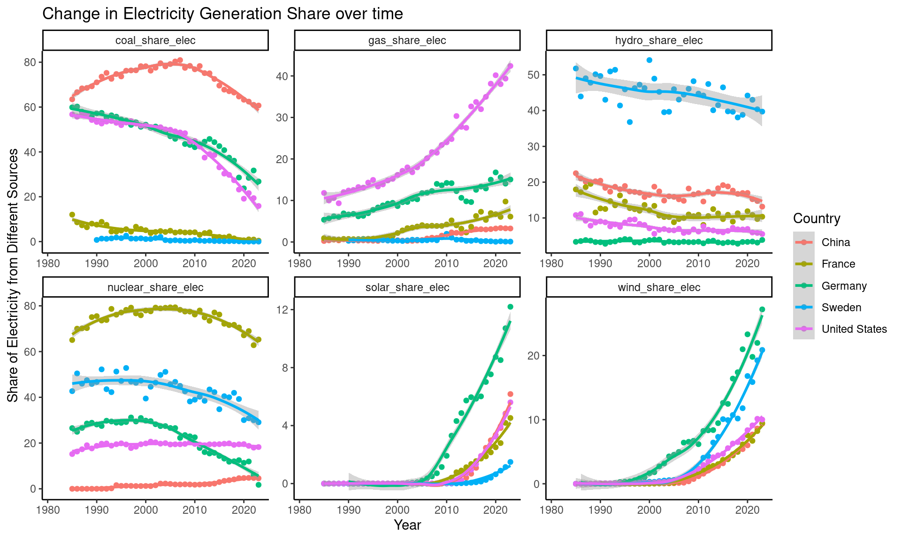
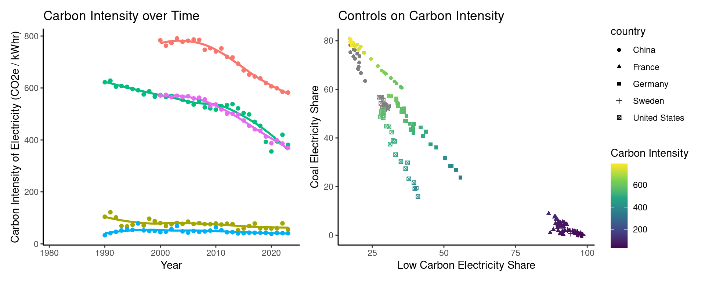
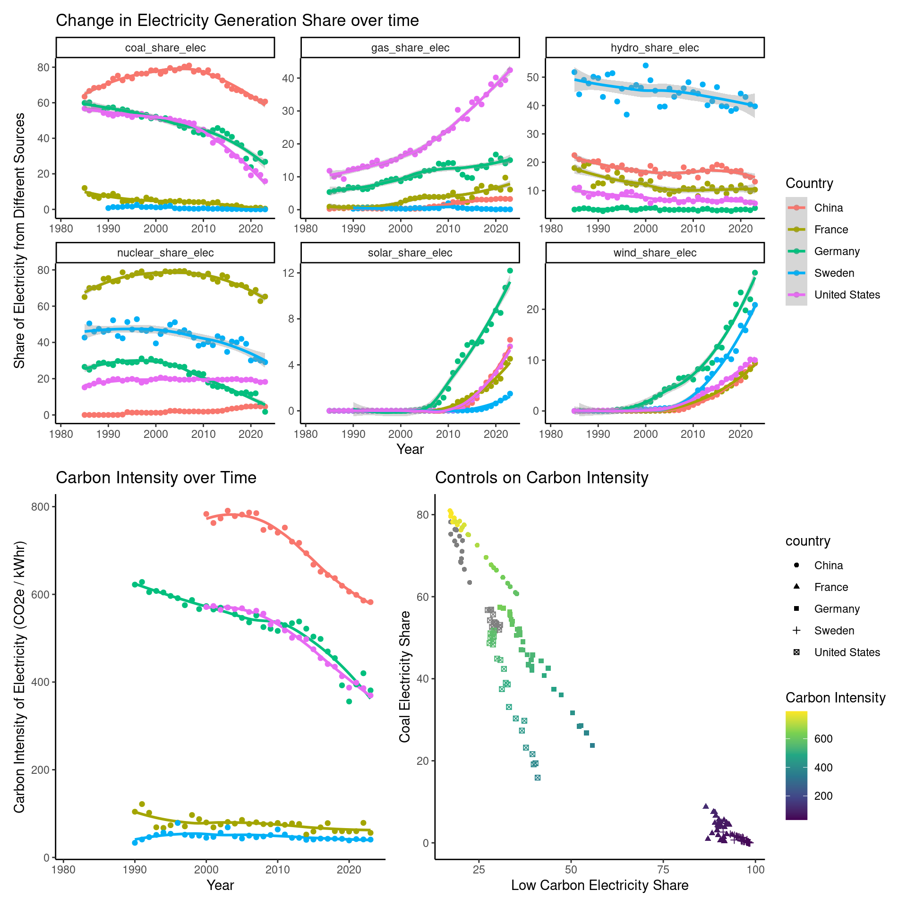

library(tidyverse)
library(lubridate)
library(scales)
library(patchwork)
library(ggthemes)
library(DT)
knitr::opts_chunk$set(warning=FALSE, message=FALSE)Carbon Intensity and Power Generation
Introduction
In this report we will look at power generation in several different countries, visualize how the share of electricity from different sources has changed over time, and look at how that associates with the carbon emissions from electricity generation.
Packages
We will use the tidyverse, lubridate, scales, patchwork, and ggthemes, for data wrangling and visualization, and the DT package for interactive display of tabular output.
Data
The data we are using comes from the website Our World in Data. Specifically, we are using a dataset compiled there on energy production and use around the world. The dataset can be found at Our World in Data’s github page, which contains both the dataset and a codebook describing the meaning of all the variables. We used owid-energy-data.csv for this analysis.
energy_data = read_csv("owid-energy-data.csv")Energy Production over Time
We are going to display a visualization which shows how the energy generation in several different countries, specifically China, France, Germany, Sweden, and the United States, changed over time. It is possible to change the countries being visualized by changing the countries listed in the countries_included variable below replacing the iso_code labels with those corresponding to the countries of interest to you.
countries_included = c("USA","DEU","FRA","SWE","CHN")We picked a small subset of the variables available in this dataset to visualize, picking the ones that are most important for overall power generation and have greatest influence on carbon emissions, namely coal, natural gas (methane), hydro, nuclear, solar, and wind. These choices can similarly be changed by finding where they occur in the select and pivot_longer functions.
See the Appendix for a list of the countries and variables present in the data.
plot1 = energy_data |>
filter(iso_code %in% countries_included, year > 1980) |>
group_by(iso_code,country) |>
select(iso_code,
year,
hydro_share_elec,
wind_share_elec,
solar_share_elec,
coal_share_elec,
gas_share_elec,
nuclear_share_elec) |>
pivot_longer(
cols = c("hydro_share_elec",
"wind_share_elec",
"solar_share_elec",
"coal_share_elec",
"gas_share_elec",
"nuclear_share_elec"),
names_to = "GeneratorType",
values_to = "Electricity_Per_Capita"
) |>
ggplot(aes(x=year,y=Electricity_Per_Capita,color=country)) +
geom_point() +
geom_smooth() +
facet_wrap(~ GeneratorType, scales = "free") +
theme_classic() +
ylab("Share of Electricity from Different Sources") +
xlab("Year") +
labs(title = "Change in Electricity Generation Share over time",
color = "Country")
plot1 
Impact of Power Sources on Carbon Intensity of Electricity Production
Many countries have set ambitious targets for reducing their carbon emissions. One way to visualize carbon emissions is to look at how much carbon dioxide is emitted for each unit of electrical energy generated. This measure called the carbon intensity of electricity generation. We will visualize carbon intensity in two ways: looking at how carbon intensity has changed over time in the selected countries, and also looking across the entire dataset and seeing how carbon intensity relates to coal power and the sum of all low carbon forms of power generation (nuclear, hydro, solar, wind).
plot2 = energy_data |>
filter(iso_code %in% countries_included, year > 1980) |>
group_by(iso_code,country) |>
select(iso_code,
country,
year,
low_carbon_share_elec,
coal_share_elec,
carbon_intensity_elec
) |>
ggplot(aes(x=low_carbon_share_elec,y=coal_share_elec,color=carbon_intensity_elec,shape=country)) +
scale_color_viridis_c() +
geom_point(na.rm = TRUE) +
theme_classic() +
labs(title = "Controls on Carbon Intensity",
color = "Carbon Intensity",
x = "Low Carbon Electricity Share",
y = "Coal Electricity Share")
plot3 = energy_data |>
filter(iso_code %in% countries_included, year > 1980) |>
group_by(iso_code,country) |>
select(iso_code,
country,
year,
carbon_intensity_elec
) |>
ggplot(aes(x=year,y=carbon_intensity_elec,color=country)) +
geom_smooth(show.legend = FALSE, na.rm = TRUE, se = FALSE) +
geom_point(show.legend = FALSE, na.rm = TRUE) +
theme_classic() +
ylab("Carbon Intensity of Electricity Production") +
xlab("Year") +
labs(title = "Carbon Intensity over Time",
x = "Year",
y = "Carbon Intensity of Electricity (CO2e / kWhr)")
plot3 + plot2;
Putting it Together
We can create the original compound plot using the following command (made possible by the patchwork package):
plot1 / (plot3 + plot2)
References
- Hannah Ritchie, Pablo Rosado and Max Roser (2023) - “Energy” Published online at OurWorldInData.org. Retrieved from: ‘https://ourworldindata.org/energy’ [Online Resource], underlying data:
- Statistical Review of World Energy, Energy Institute
- This analysis was inspired by and adapted from the vignettes in the unvotes package vignette and the Data Science in a Box Course
Appendix (#appendix)
Below is a list of countries in the dataset: